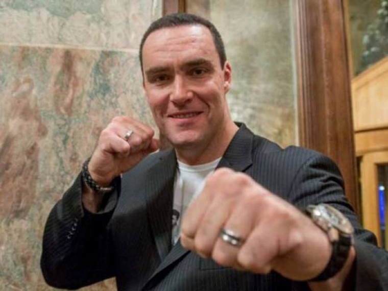

В результате стечения загадочных и невероятных обстоятельств, связанных с организацией бархатных революций в разных странах мира известный американский журналист Джон Пейн становится звездой журналистики в Москве. Аналитические прогнозы Джона о крупнейших переменах в российской политике и экономике, сбываются с точностью до запятой. Таинственный Оракул, отправляющий журналисту послания о событиях, которые должны произойти, делает из Джона нового Пророка, но, как выясняется, лишь с целью свержения российской власти. Джон делает свой выбор
КинопоискТри подружки приезжают в Лас-Вегас на уик-энд и отправляются на шоу знаменитого иллюзиониста Дариуса. Но и после представления шоу продолжается: в кабинках двух лифтов находят… две половинки тела девушки. Жертва буквально распилена пополам! Как будто известный в мире цирковой магии трюк проделал фокусник-неудачник… Или маньяк? К расследованию трагедии приступает офицер полиции Орлов –хладнокровный профессионал, сумевший и в Лас-Вегасе остаться русским. Главными подозреваемыми сразу же становятся сам прославленный фокусник и его ассистентка. К тому же выясняется, что они связаны с преступником-азиатом, которого пристрелил накануне Орлов при задержании. Но загадок становится все больше, когда погибает еще одна девушка. Окончательно запутывает разгадку чудовищной головоломки единственная выжившая из трех подруг, перенесшая в детстве жуткую психическую травму: оказывается, ее мать тоже погибла во время неудачного трюка факира! Орлов понимает, что главная мишень безжалостного преступника – именно эта девушка. Но кто он – неуловимый убийца?
Кинопоиск
Профессор из США Харрисон Джонс преподает лекции по археологии в московском университете. Однажды он узнает, что сокровища рыцарей-тамплиеров существуют и находятся в одном из спальных районов Москвы. Вместе с профессором на поиски отправляется гонщик по прозвищу Волк.
КинопоискМесто рождения: Москва, СССР
Карьера: Актер, Продюсер, Сценарист, Актер дубляжа, Режиссер
Личная жизньПервая супруга — Екатерина. Актёр познакомился с ней в студенческие годы. Вместе с ней он переехал в Америку, но спустя 15 лет брака супруги развелись. По словам Невского, при расставании он оставил всё своё имущество жене. В 2010 году Невский состоял в отношениях с танцовщицей Оксаной Сидоренко, в паре с которой участвовал в проекте «Танцы со звёздами». В общении с журналистами актёр говорил о планах сыграть свадьбу, но в 2012 году был замечен с моделью Марией Гурьевой. Однако эти отношения долго не продлились. В 2012 году у Невского был роман с моделью Марией Гурьевой, ведущей передачи «Простомария». Пара познакомилась, когда Гурьева пригласила актёра к себе на интервью. Невский называл возлюбленную девушкой мечты, но и этот союз распался.
Жанры: боевик, драма, комедия